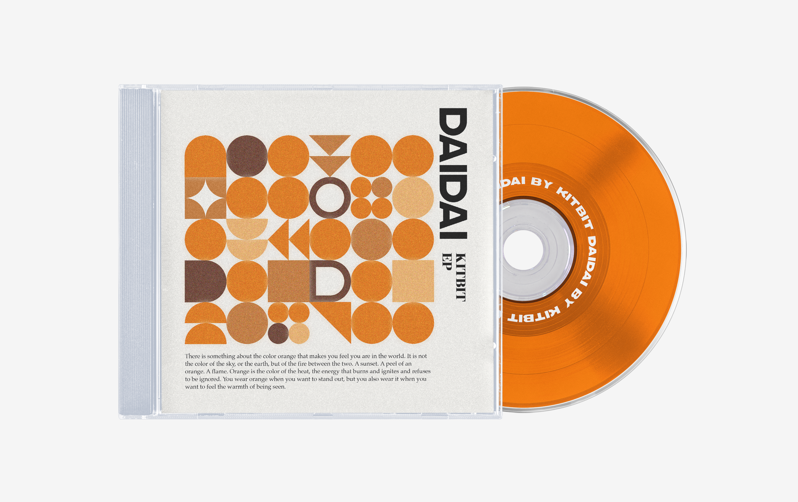

Album Cover
Design, 2024

Two geometric album covers built through typographic structure and color contrast. Murasaki (purple) and Daidai (orange) are used to establish rhythm, balance, and visual tension.